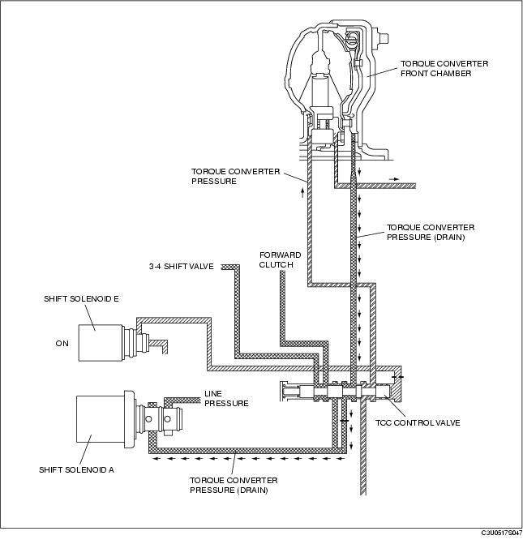

Torque converter clutch (TCC) operation [FN4A-EL]
TCC Release
• The PCM sends an OFF signal to shift solenoid E when the TCC is determined to be released. In this condition, the TCC control valve is pushed to the right by the spring force, and torque converter pressure acts on the torque converter front chamber, releasing the TCC from the converter cover.

TCC Engaging Operation
• When the PCM determines that TCC operation is smooth, it sends an on signal to the shift solenoid E to push the TCC control valve to the left. After engaging the torque converter front chamber and shift solenoid A, the PCM gradually increases the signal of duty ratio (50 Hz ON time ratio) to shift solenoid A. As a result, the torque converter pressure acted on the torque converter front chamber is drained gradually by shift solenoid A. By reducing the torque converter pressure in the torque converter front chamber gradually in this way, the TCC is pressed smoothly to the torque converter cover, and smooth TCC operation is possible.

Determination of TCC Inhibition
• The TCC control is inhibited when any of the following conditions are met:
• Engine coolant temperature is below 60 °C {140 °F}
• ATF temperature is low
• Brake switch is on (when depressing the brake pedal)
• Accelerator depressing speed and accelerator opening angle are above specified value
• Engine speed signal is below specified value
• Malfunction is detected by diagnosis function